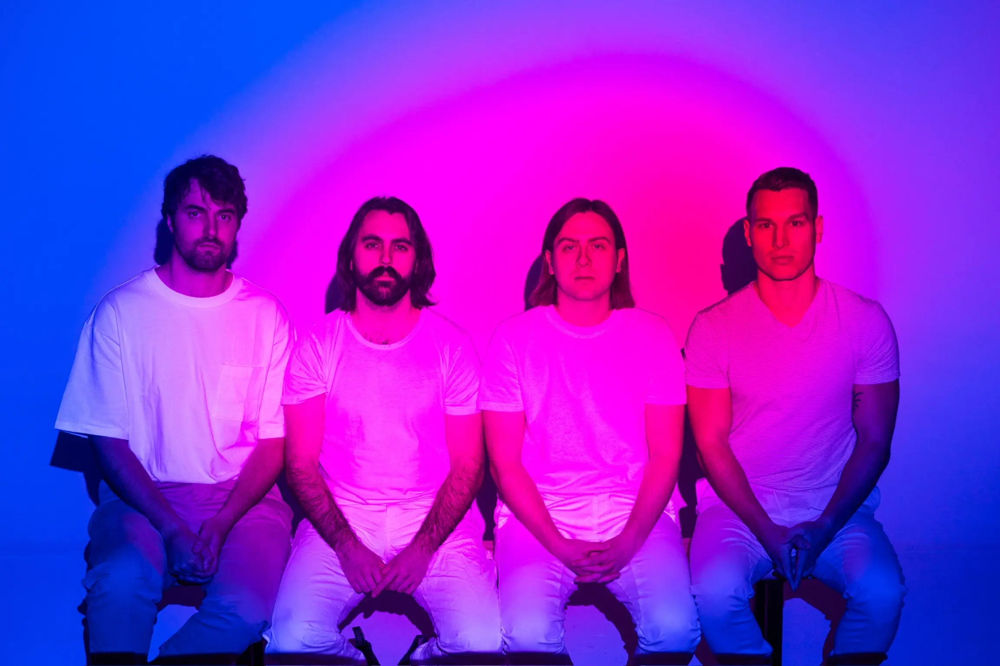
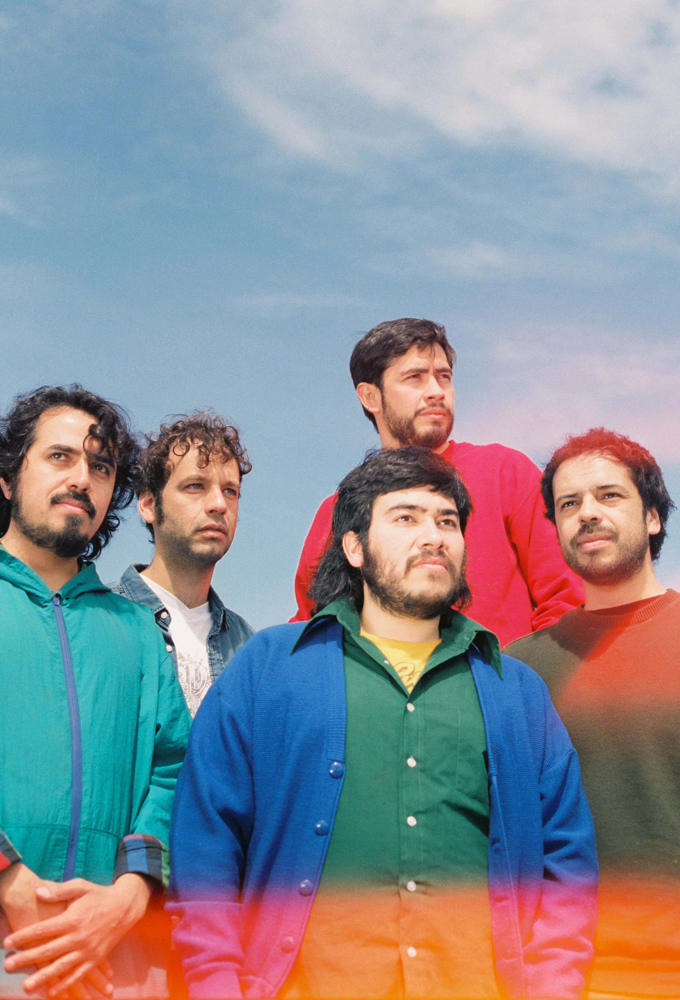

Rock alternativo
Odisseo
Odisseo es una banda mexicana que ha desarrollado un sonido propio a partir del rock alternativo, los sintetizadores y las melodías de la balada romántica. Sus canciones exploran las relaciones, el deseo, la nostalgia y las contradicciones de las emociones humanas.
Formación: 2010
Origen: Ecatepec de Morelos, Estado de Méxic
Discografía destacada
- Sí, Yo Soy
- Días de Fuego
- Cambio Estacional
- Generación Inmediata
- Tormentas Inesperadas

Dream core
Meltt
Meltt es una banda canadiense que combina el rock psicodélico con elementos del indie rock para construir canciones de atmósferas envolventes. Sus sintetizadores, melodías y cambios de intensidad crean un sonido que invita a escuchar con calma y prestar atención a sus detalles.
Formación: 2016
Origen: Vancouver, Canadá
Discografía destacada
- Swim Slowly
- Eternal Embers
- Pathways
Rock alternativo
Serbia
Serbia es una banda mexicana de rock alternativo originaria de Monterrey. Su música destaca por las guitarras intensas, las melodías contundentes y las letras que exploran las relaciones personales y las emociones difíciles de expresar.
Formación: 2013
Origen: Monterrey, Nuevo León, México
Discografía destacada
- Secretos del Sol
- Fin del Mundo
- Melodramática
- No es que no te quiera pero

Pop rock · Rock alternativo
Ases Falsos
Ases Falsos es una banda chilena que combina melodías accesibles con letras de carácter reflexivo, irónico y cotidiano. Su propuesta recorre distintos matices del pop rock y el rock alternativo, con canciones que pueden abordar tanto experiencias personales como temas sociales.
Formación: 2011
Origen: Santiago, Chile
Discografía destacada
- Juventud Americana
- Conducción
- El Hombre Puede
- Mala Fama
- Chocadito
- Tacto
Rock alternativo · Pop rock
Los Mesoneros
Los Mesoneros es una banda venezolana que combina el rock alternativo con elementos del pop rock. Su propuesta destaca por las guitarras melódicas, los arreglos cuidados y las letras personales que exploran las relaciones, los cambios y las distintas etapas de la vida.
Formación: 2006
Origen: Caracas, Venezuela
Discografía destacada
- Indeleble
- Caiga la Noche
- Pangea
- Nuestro Año
- Eso que nos trajo a Abbey Road